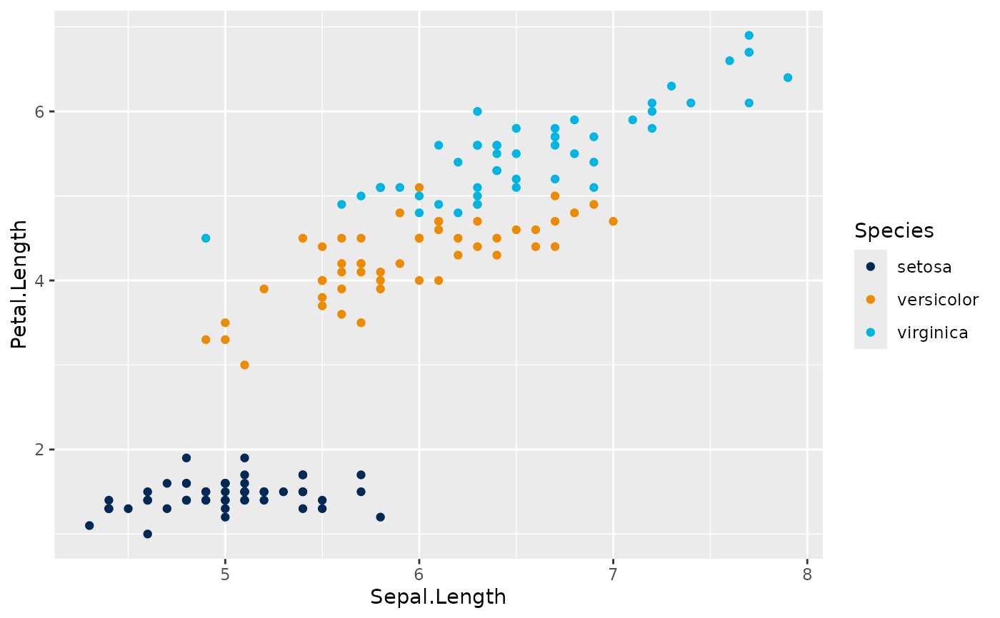

Applies colors from the bright UC Davis print palette to discrete colour or fill aesthetics.
Arguments
- ...
Arguments passed to
ggplot2::scale_colour_manual()orggplot2::scale_fill_manual().
Examples
ggplot2::ggplot(
iris,
ggplot2::aes(Sepal.Length, Petal.Length, colour = Species)
) +
ggplot2::geom_point() +
scale_colour_ucdh()
